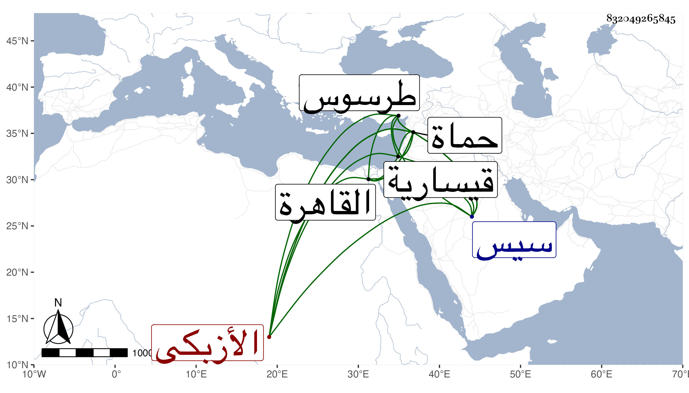

0902Sakhawi.DawLamic.ITO20230111-ara1.EIS1600.832049265845
Biography ID: 832049265845
856
ازدمر الأزبكي معتق الأتابك أزبك . لم تكن له عنده وجاهة بل كان غالب أوقاته شادا له في سبك الثلاث ثم أعتقه وبعد ذلك علم الأشرف قايتباي أنه ابن عمه فأنعم عليه ثم ولاه نيابة طرسوس فرحمه أهلها ثم ولاه سيس فخرج منها خائفا يترقب قاصد القاهرة فوجه القاصد إليه في أثناء الطريق بتقليد حماة فرجع وباشر بعسف وقلة دربة وبنى قيسارية أخذ فيها من الطريق جانبا وتعدى وزاد ويقال أن أستاذه لام السلطان على جعله نائبا لعلمه بعدم تأهله لشيء ولم يلبث أن فتك به سيف ابن علي أمير العشير بظاهر حماة فقتله مع أنابك حماة طومانباه ولم يوارهما فحضر حمزة بن سفلسيس نائب حماة فواراهما وخرج الدوادار الكبير في عسكر لذلك فلم يظفر بطائل واستقر بعده في النيابة بخدمة جانم السيفي دوادار أستاذه جانبك الجداوي .
